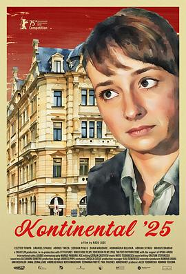

6.7
二〇二五年的欧陆
Kontinental ’25
2025
其他
评分 6.7
导演:
拉杜·裘德
演员:
埃斯特·通帕 / 安娜玛丽亚·比鲁斯卡 / 马里乌斯·达米安 / 伊林卡·马诺拉切 / 瓦娜·马尔达雷 / 谢尔班·帕夫卢 / 阿德里安·希塔鲁
类型:
剧情,喜剧
剧情简介
在特兰西瓦尼亚的克卢日，法警奥索利亚每天处理着冷冰冰的驱逐令与城市变迁的现实。她被派去征拆一栋即将改建为奢华酒店的旧楼，地下室里躲着一名无家可归的男子。他曾是一名运动员，如今蜷缩在废弃空间中，用回收垃圾维生。奥索利亚冷静地宣布驱逐，她的文件被签，警车驶入——而那人从楼梯的阴影中消失，留下一串无法挽回的余波。随着他的悲剧发生，奥索利亚陷入了一种无声的内心斗争。她在教友母亲的训斥中，站在父亲牺牲历史的镜像里；在无言的对话中，她试图理解：自己究竟做了什么？而城市继续扩张，高楼拔地而起，路灯亮起，新建酒店的霓虹把旧城区的边缘照成冷灰。建筑工地、半夜的车流、无家者的呼救，这些碎片在镜头里交织，暗示一个社会从按部就班的平静转向无法言说的不安。影片融合讽刺与沉思，以幽默却锋利的语言探讨民族矛盾、城市危机与个人良知的裂缝。奥索利亚并非英雄，她更像一面镜子：映出被拋弃的人、被忽视的系统、被遗忘的责任。你会看她在午夜驾驶、在家族争吵中僵住、在教堂里与神父低语——每一幕都音量柔小，却在心底震响。如果你愿意看一部没有传统高潮、却让细微裂缝逐渐扩大、让城市与人一起呼吸不安的作品，这部《二〇二五年的欧陆》便是。